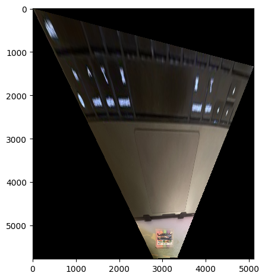
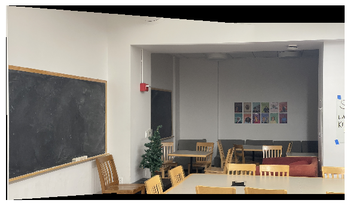
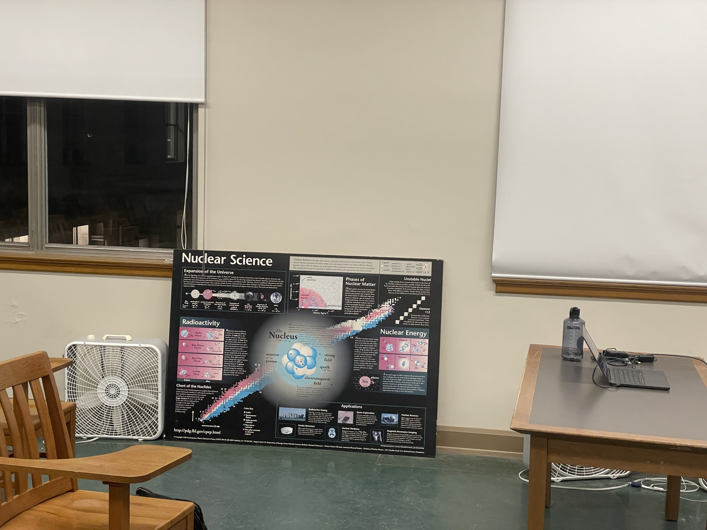
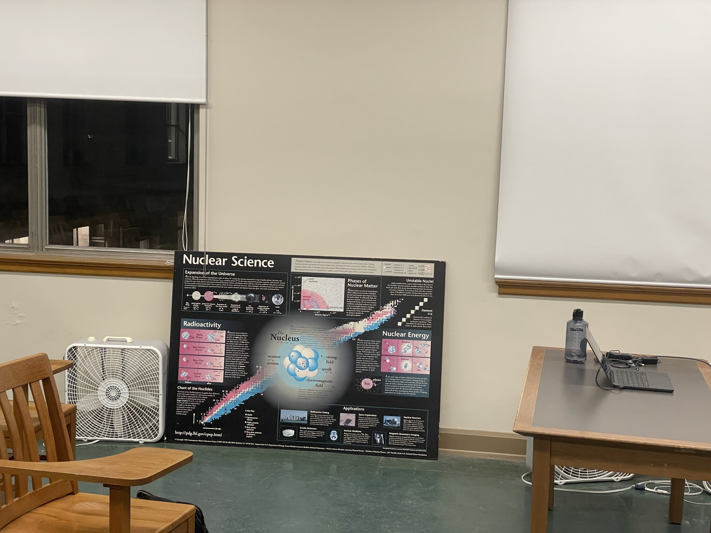

Project 4A: Image Warping and Mosaicing
In this part of the project, we explored how to warp images using correspondence points, and also learned how to generate a mosaic “stitch” of images. With this ability, we are now able to join together images to create a panoramic image. The most fun part of this project was definitely the image stitching, and it’s still interesting to think about how my phone camera manages this, since it’s somehow doing this stitching live.
Part 1: Shooting Images
I was doing this project late in the physics building, so I took a couple for this project:


These were images I took on my phone, and then rescaled to a smaller size to make the computation faster.
I also took some using my DSLR camera, shown below:
Part 2: Computing Homography
The objective of this section is to explain how we find a homography matrix \(H\) to match the correspondence points \(p\) to \(p'\) for both images. For this explanation, we follow Alec Li’s outline in detail. In essence, finding \(H\) boils down to solving the equation \(p' = Hp\), which can be written out in vector form as:
\[\begin{bmatrix} a & b & c \\ d & e & f \\ g & h & 1 \end{bmatrix} \begin{bmatrix} x\\ y\\ 1 \end{bmatrix} = \begin{bmatrix} wx' \\ wy' \\ w' \end{bmatrix}\]Solving this system of equations amounts to solving a linear system of equations, defined by the linear system:
\[\begin{bmatrix} x & y & 1 & 0 & 0 & 0 & -x x' & -yx'\\ 0 & 0 & 0 & x & y & 1 & -xy' & -yy' \end{bmatrix} \begin{bmatrix} a\\ b\\ c\\ d\\ e\\ f\\ g\\ h\end{bmatrix} = \begin{bmatrix} x' \\ y \end{bmatrix}\]This system of equations can be solved for each set of pairs \((p, p')\), and we can
solve them in parallel by just stacking the different coordinates to make a bigger
matrix and column vector on the right. One thing to note about this system is that
once 4 points are selected, then the system has an exact solution for \(a, b, ...,
h\). Once more than 4 points are given, then the system becomes overdetermined, and instead of an exact solution we need to use least-squares to find the optimal
homography matrix \(H\). This method is precisely what the computeH(im1_pts,
im2_pts) function does.
Part 3: Warping
Now that we’ve computed \(H\), we can now move on to performing the actual warp. In
my case, we will have two images im1 and im2, and I will always be warping
im1 onto im2. Similar to the previous project, in order to perform the warp we
just have to apply \(H\) to every pixel in im1, however this would lead to
issues because the size of the warped image is almost always larger
than that of im1, so if we were to naively just apply \(H\) to im1
we will get an undersampled image. Thus, to fix this, we first warp the corners of
im1 to their appropriate locations, which will also define the polygon in which
the warped im1 will reside in. This inevitably sometimes causes the corners of
im1 to be negative, so to fix this we find the values x_translate and
y_translate that are required so that the warped im1 rests perfectly in the
first quadrant. With the coordinates of the warped im1 determined, we can now
iterate through every point in this polygon and use
\(H^{-1}\) to compute the corresponding point in im1
(while also accounting for the translation mentioned just now), then use the same
interpolation procedure we used in the previous project, involving
scipy.interpolate.regularGridInterpolator().
Despite the similarities there are also a couple differences between this version of warping and the previous version. First, notice that the third coordinate of \(Hp\) is not always 1, but in order to index into our arrays properly we require that it equals 1, so we need to normalize so that \(w = 1\) every time we apply \(H\) or \(H^{-1}\). Another difference is that in this implementation, I spent a great deal of effort in figuring out how to vectorize the transformation, so that it can be done much faster. This ultimately paid off, as it sped up the runtime from ~2 minutes per image to less than 1 second.
Rectification
One application of this warping procedure is that we can now perform a procedure
called rectification, which is the process of perspective transforming a component
in an image into a particular shape. In our case, we will take perspective images of
rectangular objects, then perform the warp such that after warping the image is now
square, or rectified. To do this, we define the correspondence points on the image to
be rectified as usual, but for the points \(p'\) we wish to map to I instead defined
a hard-coded set of points [0, 400], [400, 400], [400, 0], [0, 0], which forms
a rectangle. This hard-coding makes sense here, since ultimately all we want to do is
transform the selected points in our im1 into a rectangle. For this part, I took a
photo of my chalk case (hagoromo like project 2!) and also a textbook that was kind
of collecting dust in my home:


As an aside, notice the difference in image quality – the textbook I took with my DSLR, and the chalk case I took with my phone (bad quality by comparison). To compute the rectification, I selected the following points from both images (marked in red on the left and yellow on the right):


Correspondingly, here are the rectified images:


One thing to note with these rectified images is that the more extreme the angle, the more extreme the resulting warp: it’s clear that the chalk case was shot at a much shallower angle than the textbook, and as a result the corresponding warp distorts the upper region much more heavily, to the point where the chalk case almost can’t be seen. That said, these images are evidence that the rectification procedure does indeed work, since the resulting objects (the chalk case and the textbook) both appear square in the final image.
Creating a Mosaic
Now, we move on to the final part for part A of this project, which is to join two
images together using our correspondences and stitch the images together. To do this,
I implemented a function blend(im1, im2, x_translate, y_translate) to do exactly
this.
To implement this function, there are a couple things to consider, the first of which
is the translation. Recall that in morphing im1, we had to translate it to
guarantee that the resultant image lies in the first quadrant. Because this shift
globally translated every coordinate in im1, in order for the alignment to be
proper we also need to apply this translation to im2 as well; this is why we have
the arguments x_translate, y_translate passed into the blend function.
Next, we need to determine the final size of the canvas, which can be done by taking
the maximum between the shifted im2 and the morphed im1 dimensions.
Then, for the blending process itself, we do a 2-band Laplacian pyramid (same as what
we did in project 2), blending the
low and high frequency components separately. In the low frequency regime, we take a
distance transformation using cv2.distanceTransform(), then take a weighted linear
combination of im1_low and im2_low (the result of im1, im2
after the low-pass filter) to determine the low-frequency component of the stitched
mosaic. The weights are calculated using
\(\text{weight}_i = \frac{d_i}{d_1 + d_2}\) which is very similar to the
alpha blending procedure we used in project 2. One thing to note about this weight
procedure is that sometimes it gave me division by zero errors, so I had to
artificially add a very small 1e-5 to fix this.
For the high frequency components, the distance transformation alone was used as the
tiebreaker for whether we took the high frequency in im1 or im2
for each point. That is, if dist1 has a higher value than dist2 at
some [x, y], then im1_high[x, y] was taken, and vice versa.
Finally, we add the low and high frequency components together, in the same way we collapsed the Laplacian stack in Project 2. Taking the images from the physics building, defining the corresponding points, we can get the following image stitching:

I also took some photos of Physics 251, one of the quiet spots in physics that I like to go to for studying:


And here’s the stitched image:
And another of 251, from a different angle:
 

Stitched:

Unfortunately, you can’t read the text on that poster, because I downscaled the image beforehand so that I can use the provided correspondence tool (the image was too big otherwise). Nonetheless, all three of these images demonstrate evidence of proper stitching, since we can’t see any seams where the interfaces of the two images lie.
This last part of the project was incredibly cool to see working: in retrospect, it the mathematics and procedure make a lot of sense to me, but even after everything I still think that it’s extremely impressive that we’re able to come up with procedures to accomplish complex tasks like this – and all it really takes is a little linear algebra.